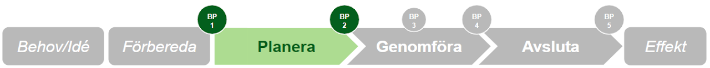
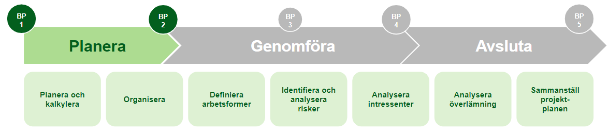

Vad händer nu?
Projektledaren är nu den som leder arbetet. Om det i projektdirektivet var beställarens ansvar att beskriva vad projektet ska göra och varför, så är det nu projektledarens ansvar att i en projektplan beskriva hur projektet ska genomföras.
Projektledaren analyserar projektdirektivet och kan träffa beställaren för avstämning. Det finns stora fördelar i att undersöka om liknande initiativ redan genomförts och vilka lärdomar som finns att hämta.
Kommunikationsplan
För ett lyckat projekt behöver en kommunikationsplan tas fram. Den sammanfattar de kommunikationsinsatser som behövs och uppdateras allteftersom projektet framskrider. Vid mindre komplexa projekt kan den skrivas direkt i projektplanen.
Ansvar vid ändringshantering
Samtliga projektmedlemmar har rätt att påverka och ge feedback kring förändringar. Dessa lyfts till projektledaren för beslut. Större förändringar som påverkar tid, kostnad och resurser ska lyftas till beställaren/styrgruppen. Beslut om förändringar dokumenteras i en beslutslogg.

Planeringsfasen avslutas med att styrgrupp tar ett BP 2-beslut — förutsättningar finns och projektet är värt att fortsätta. Vem fattar beslut? Beställaren med stöd av styrgrupp.
Vad ska finnas på plats för BP 2?
- Projektledaren har omsatt projektdirektivet i en dokumenterad projektplan
- Projektet har tillräckliga personella resurser
- Projektet har säkerställd budget och materiella resurser
- Projektgruppens deltagare är resurssäkrade och insatta i projektplanen
- Utsedd mottagare har möjlighet att ta vid leveransen (ägandeskap)
- Projektplanen antas (godkänns)
Obligatoriska dokument
- Projektplan
- Statusrapport (löpande)
- Beslutslogg
Verktyg i planeringsfasen
Identifiera och analysera alla som påverkas av eller kan påverka projektet.
Öppna mall →Planera när projektets olika aktiviteter ska utföras. Innehåller även beslutslogg.
Öppna mall →Checklistor
Beställaren
- Jag finns tillgänglig som stöd för projektledaren
- Projektledaren har tagit fram en projektplan som möjliggör att projektet når sina mål
- Projektledaren har, i samråd med mig och styrgruppen, format projektgruppen
- Jag har försäkrat mig om att alla resurser är säkerställda för projekttiden
Projektledaren
- Jag har samma bild som projektbeställaren kring projektets syfte och mål
- Jag har tänkt igenom och beskrivit alla avsnitt i projektplanen
- Den framtagna projektplanen känns rimlig och möjlig att genomföra
- Projektgruppen har den kompetens som krävs
- Det finns en realistisk tidsuppskattning gjord för alla i projektet
- Tidplanen är realistisk och beslutspunkter är inplanerade
Planera och projektera — LF:s motsvarande fas
Hos Lejonfastigheter motsvaras planeringsfasen av processen Planera och projektera projekt. I denna fas:
- Genomförs startmöte projektering med projektörer och externa intressenter
- Projektinformation, hyresavtal och hållbarhetsprogram gås igenom
- Systemhandlingar projekteras utifrån förankrad projektinformation
- Kommunikationsplan (LM 324) och aktivitetsplan (LM 442) används
Tillgängliga mallar hos Lejonfastigheter hittas i mallsamlingen på Lejonet.
Jag vill veta mer!
Vad är en milstolpe?
En milstolpe är en viktig händelse i projektet — till exempel att krav inför en upphandling är klara eller att ett avtal är signerat. Milstolpar är inte nödvändigtvis knutna till att beslut ska tas, till skillnad från beslutspunkter.
Om delleveranser är aktuellt
Det kan finnas fördelar med att dela upp leveranserna i flera delleveranser. Varje del kan avslutas med en BP (BP 3:1, BP 3:2 och så vidare). Oavsett hur genomförandefasen planeras behöver det förankras hos styrgruppen.
Förbered diarieföring redan nu!
Märk de dokument som ska diarieföras med etiketten "Ska diarieföras" redan under planeringen. Det förenklar arbetet när projektet avslutas. Läs mer under Diarieföring.